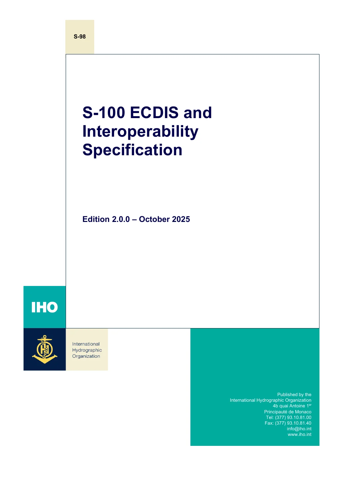

正在加载对应页译文…
英文来源：IHO 官方标准发布页 · 官方发布包 · 核对日期：2026-11-02。
译文说明：基于官方英文重新生成的自动翻译参考稿，已统一部分专业术语；未经 IHO 审校，尚未逐条人工校核。正式实施及存在歧义时，以左侧官方原文为准。
本文统一将 must / shall 的强制要求标为“必须”，must not / shall not 标为“不得”，should 标为“宜”。图表、公式及提取文本的阅读顺序请结合原页核对。下载全部中文参考译文
连续阅读：向下滚动即可查看本文件全文，无需逐页点击；目录和搜索可直接定位。
官方英文原页
放大原页 ↗